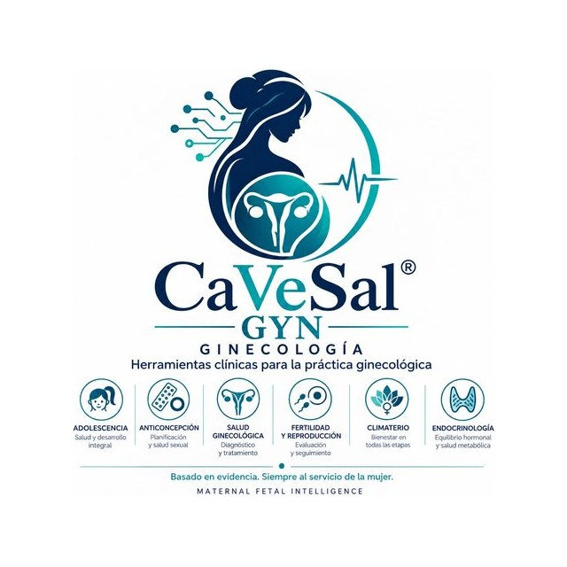
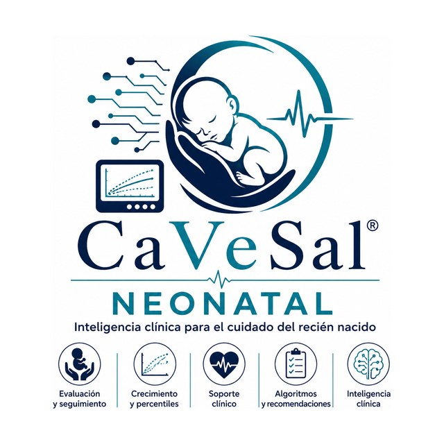

El ecosistema digital que vela por tu salud
Mujer · Embarazo · Maternidad · Neonatología




¿Para quién es?
Cada lado del ecosistema tiene su propia página, con todo el detalle.
Herramientas clínicas de uso médico
Calculadora Prenatal, Historia Clínica, Emergencias Obstétricas y Parto, CaVeSal® IA y Academy. Basadas en guías OMS, ACOG, NICE, FMF Barcelona, CLAP y MSPBS Paraguay.
Ver apps y precios →Te acompañamos en cada etapa
CaVeSal® Mamá, desde que buscás el embarazo hasta el primer año de tu bebé, y CaVeSal® Mujer, tu salud ginecológica en todas las etapas. Gratis para empezar.
Conocer Mamá y Mujer →Qué hace cada una
Cada aplicación cumple un rol específico dentro del ecosistema.
Riesgo prenatal, edad gestacional, biometría, curvas y percentiles, Doppler y más de 40 módulos clínicos.
La historia digital completa de la mujer en todas sus etapas, con más de 150 guías clínicas integradas.
Código Rojo, Código Azul THAE, Código Amarillo — Sepsis, Código Azul Obstétrico y partograma Ministerio CLAP, con modo voz.
Agente clínico con guías FMF, ACOG, FIGO, NICE y OMS, integrado con la Calculadora y la Historia Clínica.
Todas las guías CaVeSal® en un solo lugar, con buscador de artículos científicos y accesos a guías oficiales (MSPBS, OMS, FIGO, ACOG, NICE, ISUOG). En español, inglés y portugués.
Herramientas clínicas para la práctica ginecológica.
Inteligencia clínica para el cuidado del recién nacido.